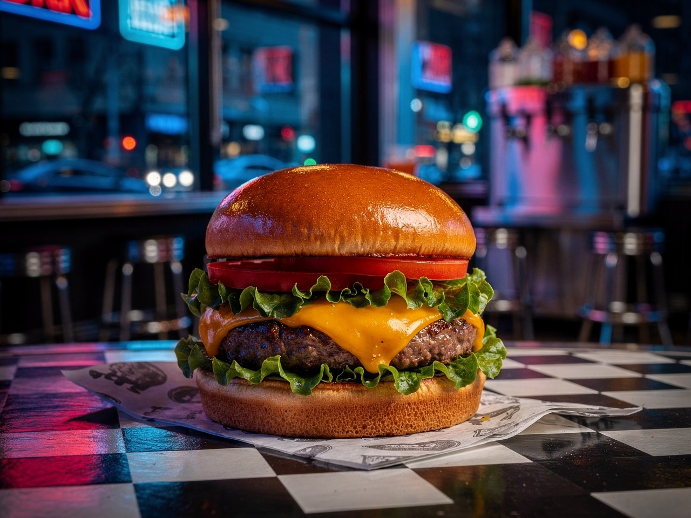

Home
Chicken Burger

Description
A chicken burger is a delicious and satisfying combination of a
crispy or grilled chicken patty, fresh vegetables, and flavorful sauces, all tucked
inside a soft, toasted burger bun. The chicken is typically seasoned with herbs and
spices, giving it a savory, juicy, and aromatic taste, while lettuce, tomato, and
onions add a refreshing crunch.
Ingredients
- 1 cup bread crumbs
- 1/4 cup minced onion
- 2 cloves garlic, minced
- 2 tablespoons grated Parmesan cheese
- 1 and 1/2 teaspoons coarse sea salt, or to taste
- 1/2 teaspoon ground paprika
- 1/2 teaspoon freshly ground black pepper
- 1/4 teaspoon cayenne pepper (optional)
- 1 pound ground chicken
- 1 large egg
Steps
- Preheat an outdoor grill for medium hear and lightly oil the grate
- Place bread crumbs, onion, garlic, Parmesan cheese, salt, paprika, black pepper, and cayenne pepper into the bowl of a food processor; pulse until blended.
- Combine chicken, egg, and bread crumb mixture in a large bowl until evenly mixed. Divide and shape mixture into 4 equal patties. Place on a cookie sheet and cover with aluminum foil. Refrigerate for 5 to 10 minutes.
- Cook patties on the preheated grill until cooked through, at least 7 minutes per side. An instant-read thermometer inserted into the center of the patties should read at least 165 degrees F (74 degrees C)